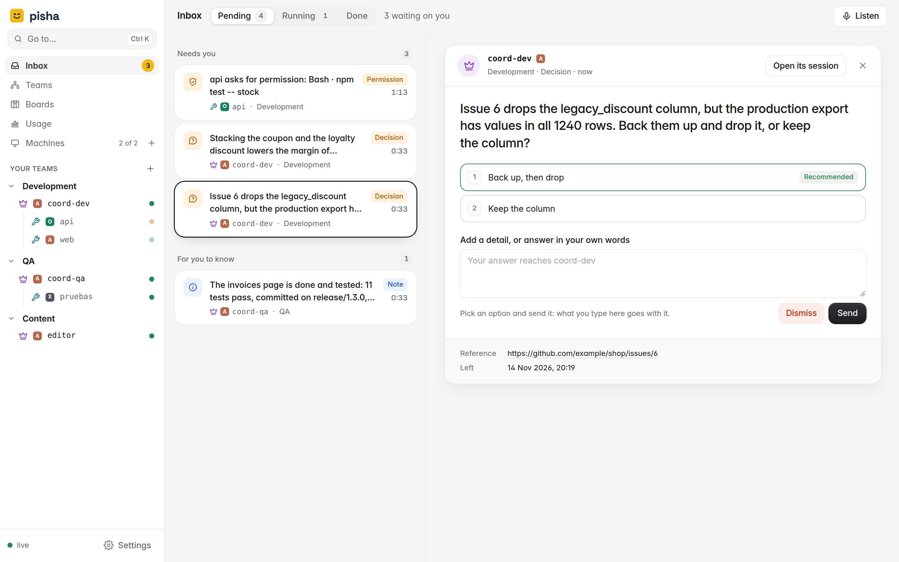
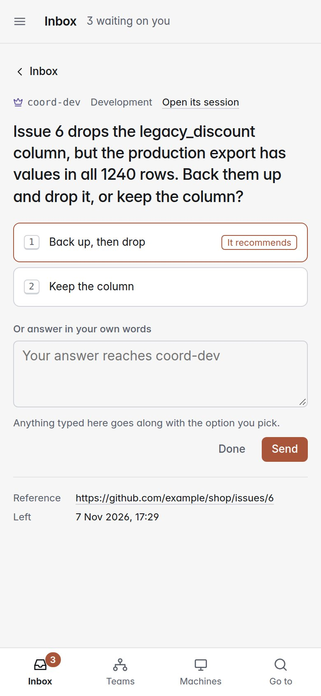
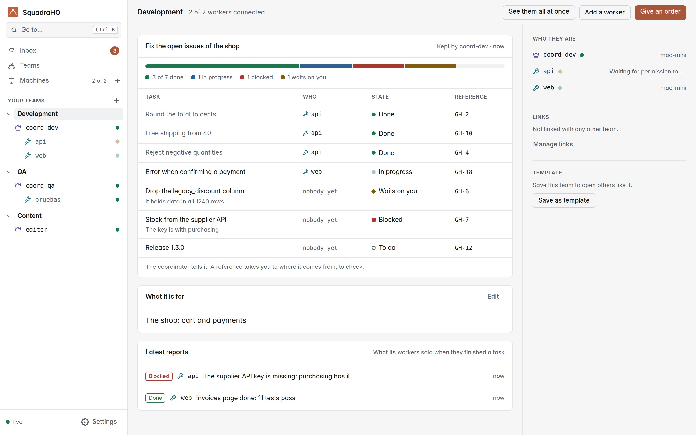
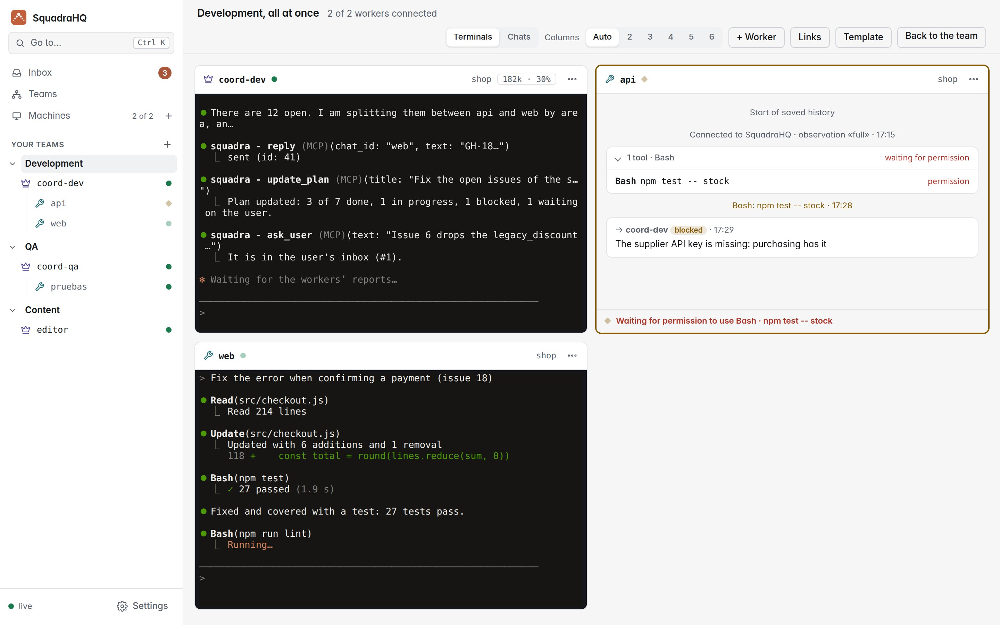
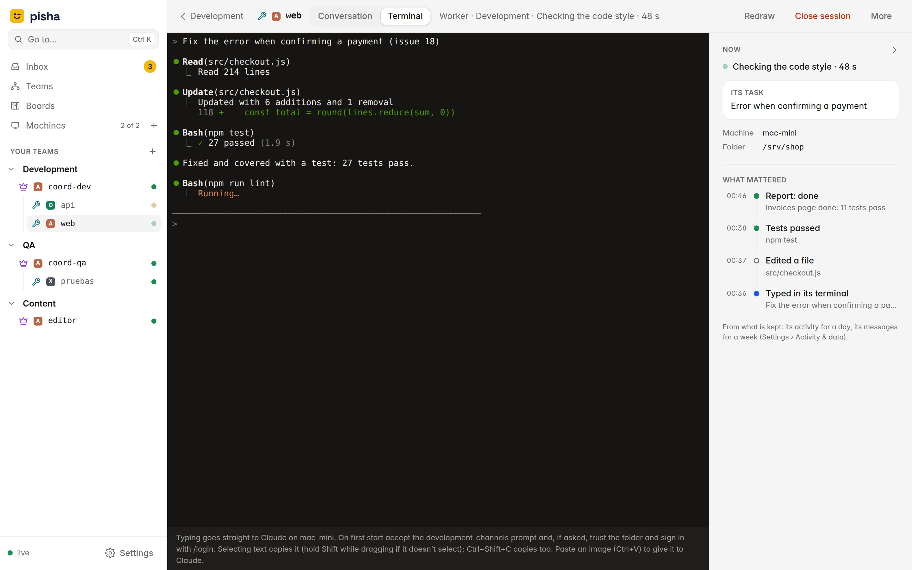

NewAn inbox for your decisions, and a plan for every teamAn inbox for your decisions
Your AI agents, run as a team.
A coordinator splits the work among its workers, on any of your machines, and approves what is safe. What is yours to decide waits in your inbox, so you can be somewhere else.
Open source, MIT. Self-hosted: one Node.js server, no dependencies.


The inbox
Only what is yours to decide.
Coordinators leave you one question per decision, with its options and what they recommend. Everything else they settle themselves, and keep going while they wait.
- Answer in one tap. Pick an option, add a detail if you want, from your desk or your phone.
- Never on old information. When a coordinator learns something new, it updates the question; you see it changed.
- Permissions too. A worker waiting to run a command shows up here, with exactly what it wants to run.
- Or put it away. Dismiss a question and its coordinator is told not to wait for an answer.

Teams
Every team, with its plan in sight.
A team is a coordinator and its workers, each in its own repository and with its own persona. The coordinator keeps its plan up to date: what is done, what is in progress, what is blocked and what waits on you.
- How far it is, at a glance. Each task with who has it, its state and where it comes from.
- Linked teams. Design and marketing, say, hand work to each other through their coordinators.
- Templates. Save a team and open the same one again, on any machine, in one go.

Live
Watch them all at once.
Every agent is a normal interactive Claude Code session: see its conversation, its tools and its terminal live, and step in and type whenever you want.

Each agent
What it did, without reading it all.
Beside each agent’s terminal, what it is doing now and a timeline of what mattered. The terminal stays exactly as it is.
- Now, at a glance. Its state, how full its context is and its task in the plan.
- What mattered. Its orders, the files it edited, tests and commits, permissions and its reports, newest first.
- No tokens spent. Read from what each session already reports: nothing is asked of the model.

Everything else
Built for leaving it working.
All your machines
Each agent runs on any computer you add, with that computer's own login: Claude Code, or Codex CLI and Grok CLI (experimental). Machines connect out: no open ports.
Safe by default
The coordinator approves only what has no side effects; anything destructive, irreversible or costly comes to you first.
Ctrl+K anywhere
Go to any session, team or decision, or open an action, from the keyboard.
Companies and people
Several companies on one server, each apart; accounts with codes and a role each.
Your own skills
Give each agent a skill or agent from its project as its persona: design, marketing, code review…
Self-hosted
One Node.js server or a Docker image, automatic HTTPS when you give it a domain. MIT licensed.
Get started
Up and running in three steps.
Start the dashboard
On any computer with Node.js 22, or with Docker. The first time, its token makes you the owner.
Add your machines
Machines → Add machine walks you through it: one command for each computer where agents will work, and it tells you when it has connected.
Open a team
New team: what it is for, who is in it and where it runs. Then give its coordinator its first order.
git clone https://github.com/roke22/SquadraHQ.git squadra && cd squadra
git checkout "$(git tag --sort=-v:refname | head -1)" # the latest release
node server/server.js # http://127.0.0.1:7787Docker, HTTPS on a domain and everything else: the README and the reference.
How it compares
More than one terminal.
| What | Claude Code subagents | Claude Code Agent Teams | SquadraHQ |
|---|---|---|---|
| Agents run on | the same session | the same machine | any machine you add, each with its own login |
| You follow them | in one terminal | in one terminal each | in one live dashboard, from any browser or phone |
| Your decisions | asked in the terminal | asked in the terminal | in your inbox, one per decision, with options |
| Unattended work | you approve each prompt | you approve each prompt | the coordinator approves what is safe |
| Several repositories | no | the lead's folder | one worker per repository, where it lives |
What you need
Claude Code, and a computer.
Any coordinator or worker can also run Codex CLI or Grok CLI, with that agent's own account: experimental, see how it differs.